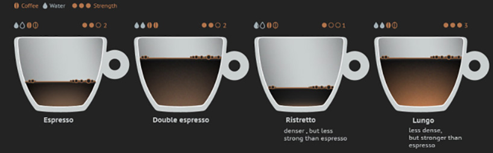
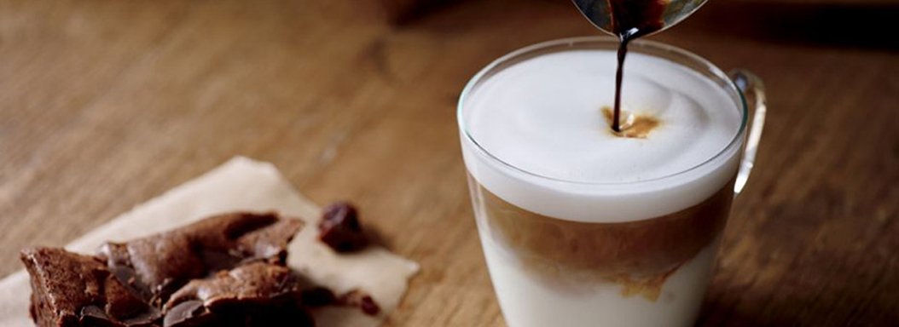

انواع قهوه
آیا از آن افرادی هستید که وقتی به کافه میروند، دقیقا میدانند قرار است چه چیزی سفارش دهند یا از آن دسته افرادی که پس از چککردنهای پیاپی منوی کافهها و بالاو پایین کردن آنها، با شک و تردید دست به انتخاب میزنند؟ این سوال در مورد واقف بودن به انواع قهوه بود؛ اما از طرف دیگر، آیا اصلا به دنبال این هستید که کمی در هزینههای مربوط به مصرف قهوه و کافه رفتنتان صرفهجویی کنید؟
آیا شمایی که قهوه دوست دارید، مایل هستید با تهیهی یک دستگاه قهوهساز یا اسپرسوساز، یک کافهی دمِ دست در آشپزخانهتان داشتهباشید؟ آیا بین دوراهی خرید قهوهساز و اسپرسوساز ماندهاید؟ آیا قیمت زیاد اسپرسوسازها برای شما سوال ایجاد کرده است؟ اصلا آیا فرق بین اسپرسو و کاپوچینو با کافهلاته را میدانید؟ مهم نیست به این سوالها چه پاسخی میدهید؛ همین که تا به این جای مطلب را خواندهاید، دلیل میشود که ادامهی این مقالهی خوش عطر و طعم را هم بخوانید!
ماجرا از کجا شروع شد؟
اول از همه باید گفت مادهی اصلی و پایهای تمام انواع قهوه همان دانههای قهوهایِ خوشعطری هستند که همهمان میشناسیم. حتما شما هم دیدهاید که برخی از مغازههای فروش قهوهی خام، بستههای جداگانهای با عنوان قهوهی اسپرسو یا قهوهی تُرک عرضه میکنند؛ اما باید گفت که استفاده از چنین عبارتهایی کاملا غلط است. چرا که برای تهیهی قهوهی اسپرسو، از دانهی قهوهی خاصی استفاده نمیشود.
حتی طریقهی بو دادن این قهوه هم متفاوت از قهوهی دمکردنی نیست. هرچند معمولا از انواع تیرهتر بودادهی قهوه برای تهیهی اسپرسو استفاده میشود، اما میتوان از سایر انواع هم برای چنین منظوری استفاده کرد. تنها مورد تعیینکننده در مورد نام قهوه، نوع طبخ و شیوهی دمکردن آن است. البته باید این را عنوان کرد که برای درستکردن اسپرسو، معمولا از بهترین ترکیبهای قهوه و بهترین آسیاب آن استفاده میشود. یعنی اینکه بر طبق رسوم، نوع اعلای دانههای قهوه را برای اسپرسو استفاده میکنند.
قهوه ترک و قهوه فرانسه (قهوه دمکردنی)
ابتدا در مورد انواع قهوه دمکردنی حرف بزنیم. در کل، دو نوع قهوهی دمکردنی وجود دارد: قهوهی تُرک و قهوهی فرانسه. البته اینها به نوع خاصی از دانهی قهوه اشاره ندارند و تنها در شیوهی دمکردن با هم فرق میکنند.
قهوهی ترک، قهوهای است که در دنیا آنرا با نام قهوهی خاورمیانهای هم میشناسند. این نوع قهوه با استفاده از ترکیب کردن آب و دانههای آسیابشدهی قهوه و جوشاندن مستقیم آن روی شعلهی اجاق گاز به دست میآید. برای درستکردن قهوهی تُرک، به ابزار خاصی به نام قهوهجوش نیاز دارید که تُرکها به آن، جِزوه (Cezve) یا اِبریق (Ibrik) میگویند. ولی شما از همان کلمه قهوهجوش استفاده کنید، خیلی بهتر است!

دانههای قهوهای که برای درستکردن قهوهی تُرک استفاده میشود، باید به خوبی آسیاب شوند و کاملا یکدست باشند. این قهوه را مستقیما از روی اجاق برمیدارند و درون فنجان میریزند. البته در حال حاضر، کافهها معمولا به دلیل کمبود فضا و زمان، از شیر بخار دستگاه اسپرسوساز به جای شعلهی گاز استفاده میکنند که قهوهی به دست آمده در این روش، از ظاهر و طعم مطلوبی برخوردار نیست و با یک قهوهی تُرک ارجینال فاصلهی زیادی دارد.
در سمت مقابل، قهوهی فرانسه را داریم که امروزه با استفاده از دستگاههای قهوهساز (Coffe Maker) درست میشود. در دستگاههای قهوهساز، آب داغ از روی قهوهی آسیابشدهای که روی صافی قرار گرفته، عبور میکند و نوشیدنی به دستآمده، در یک لیوان یا قوری جمع میشود. دستگاههای قهوهساز، معمولا به یک المنت گرمایی در زیر قوری قهوه مجهز هستند تا دمای قهوه همواره در سطح مطلوبی نگه داشتهشود. قهوههای دمکرده را در صورت نگهداری صحیح میتوان تا دو ساعت پس از دمکردن هم مصرف کرد.
اسپرسو و انواع قهوه مشتقشده از آن
در نقطهی مقابل قهوههای دمکردنی، قهوهی اسپرسو قرار دارد که ایتالیاییها آن را به دنیا هدیه کردهاند. این جماعتِ عاشقپیشه و رمانتیک که انگار استعدادی ذاتی دارند تا از هر چوب خشکی یک تجربهی احساسی خلق کنند، علاوه بر پیتزا، این نوشیدنی را هم به وجود آوردند که درست مثل پیتزا، جهانی شد.
اسپرسو را یک جوان ایتالیایی به وجود آورد تا قهوه را با سرعت زیاد و کیفیت خوب در اختیار مشتریهایش قرار دهد. نام اسپرسو (Espresso) اشاره مستقیمی به سازوکار تهیهی آن دارد. اسپرسو از تحت فشار (Pressure) قرار دادن قهوه و در مدت زمان بسیار کمی (Express) آماده میشود. پس کلمهی اسپرسو را میتوانیم ترکیبی از پِرِشِر و اکسپرس بدانیم؛ قهوهای که تحت فشار قرار میگیرد و خیلی سریع آماده میشود.
حداکثر ۲۵ ثانیه طول میکشد تا یک شات تک یا دوبل اسپرسو آماده شود. در حالی که قهوهسازهای معمولی از روش تماس سادهی آب و بخار آب با دانههای آسیابشدهی قهوه استفاده میکنند، در ماشین اسپرسوساز، آب با دمای بالا و فشار بسیار زیاد از روی قهوهی آسیابشده عبور میکند. هرچند روشهایی برای تهیهی اسپرسو روی اجاقگاز هم وجود دارد، اما طعم نهایی در این روش، به هیچ وجه حتی شبیه به یک اسپرسوی معمولی هم نیست.
اسپرسوسازها میتوانند فشار زیاد آب را در دمای به خصوصی کنترل کنند و با عبور چنین آبی از روی دانههای آسیابشدهی قهوه، طعم دلنشینی به وجود بیاورند. این کار تنها از همین ماشینها ساخته است و نمیتوان در دستگاههای دیگر، سراغی از آن گرفت. دلیل اصلی گرانبودن اسپرسوساز هم همین قطعات مرغوب و پمپ الکتریکی و قابلیت فعالیت آنها در فشار زیاد است.
تفاوت بین قهوه دمکردنی و قهوه اسپرسو
در مورد تفاوت طعم قهوهی اسپرسو و قهوهی دمکردنی، بین افراد اختلاف رای وجود دارد؛ عدهای (معمولا قدیمیترها) انواع قهوه دمکردنی را ترجیح میدهند و عدهای دیگر، معتقدند هیچ طعمی با طعم اسپرسو قابل مقایسه نیست.
از لحاظ ظاهری، قهوهی اسپرسو را میتوان با لایهای از کف نرم (فوم – Foam) که روی نوشیدنی تشکیل میشود شناخت. این لایهی فومی ناشی از دیاکسید کربنی است که در جریان بودادن (Roasting) دانههای قهوه در آنها ترکیب و حالا در اثر فشار آب داغ آزاد شده است. این دیاکسید کربن، تنها به ایجاد حبابهای کوچک روی اسپرسو منجر میشود و به هیچ وجه مضر نیست.
یک اسپرسوی خوب، باید کفی طلایی یا زرد رنگ داشتهباشد و ایجاد کف سفید یا قهوهای نشاندهندهی این است که یا قهوهی مورد نظر، خوب بو داده نشده یا قدیمی است و از تاریخ مصرفاش گذشته. میزان کفی که روی اسپرسو تشکیل میشود هم نشاندهندهی غلظت و سنگینی آن است؛ هر چه مقدار این کف بیشتر باشد، اسپرسوی قویتر و بهتری خواهیم داشت.
قهوهی دمکرده از کافئین بیشتری در مقایسه با اسپرسو برخوردار است. اما باید به این نکته هم توجه داشت که قهوههای دمکرده را معمولا درون ماگهای بزرگ مصرف میکنند؛ در حالی که یک شات اسپرسو، حجمی در حدود یک هشتم حجم یک ماگ قهوه دارد. به این ترتیب، میتوان گفت مصرف حجم بیشتری از قهوه در انواع دمکردنی، دلیل اصلی ورود کافئین بیشتر به بدن است. در واقع میزان غلظت کافئین در هر واحد از اسپرسو به مراتب بیشتر از قهوهی دمکردنی است. در صورت مصرف حجم یکسان از این دو نوع، کفهی ترازویِ کافئین در سمت اسپرسو سنگینی خواهد کرد.
خوردن یک ماگ کامل از قهوهی دمکرده، تجربهی کاملا متفاوتی در مقایسه با یک شات کوچک از اسپرسو است. ماجرا به گونهای است که میتوان برای مصرف این دو نوع، شرایط زمانی مختلفی پیشنهاد کرد؛ اسپرسو برای عصرهای دلگیر (پاییزی) مناسبتر است و قهوهی دمکردنی برای ایجاد یک صبح شاد و پر انرژی و آمادگی برای کار و فعالیت روزانه.
سایر انواع قهوهها
همین! تنها همین دو نوع از آمادهکردن قهوه در دنیا وجود دارد: قهوهی دمکردنی و قهوهی اسپرسو. سایر انواعی که امروزه میبینیم، از این دو نوع کلی مشتق میشوند و خودشان به تنهایی یک شیوهی جدید به حساب نمیآیند.
قهوه آمریکانو
به عنوان مثال، قهوهی آمریکانو (Americano) از ترکیب آب داغ با اسپرسوی آماده شده به دست میآید. برای ساخت قهوهی آمریکانو، آب داغ را با اسپرسو ترکیب میکنند تا از غلظت اسپرسو کم شود.
البته مهم است که آب جوش روی اسپرسو ریخته شود؛ چرا که اگر این ترتیب جابجا شود و اسپرسو را به لیوان آب داغ اضافه کنیم، اسم ترکیب به دست آمده دیگر قهوهی آمریکانو نیست و باید آنرا لانگ بلک (Long Black) نامید! نامی که در استرالیا و نیوزیلند به این معجون شفابخش اطلاق میشود.
جالب است بدانید که زمان به وجود آمدن قهوهی آمریکانو را به دورهی جنگ جهانی دوم نسبت میدهند. گویا در آن زمان، آمریکاییها وارد اروپا میشوند و چون نمیتوانند طعم اسپرسو و غلظت آن را تحمل کنند، جلوی چشمان بهتزدهی ایتالیاییها اسپرسو را با آب داغ ترکیب میکنند تا همان قهوهی تلخ و سیاهی که در وطن خودشان میخوردهاند را به دست بیاورند. بعدها، این ترکیب به نام قهوهی آمریکانو معروف میشود!
قهوه دوپینو (اسپرسوی دوبل)
نوع دیگری از قهوه با نام دوپیو (Doppio) وجود دارد که به کار بردناش در مملکت ما چندان مصطلح نیست و تنها افراد روشنفکرنمایی که میخواهند ادای اروپاییها را دربیاورند، از این کلمه استفاده میکنند. میخواهید معنی دوپیو را بدانید؟ خیلی ساده است، ایتالیاییها به اسپرسوی دوبل میگویند دوپیو! نوع دیگری هم داریم که از اسپرسوی دوبل هم بیشتر است و لانگو (Lungo) نام دارد.
قهوه ریستریتو
در مقابل، کلمهای با نام ریستریتو (Ristretto) در بین ایتالیاییها رایج است که حاصل قاطیکردن دو کلمهی Espresso و Restrict (به معنای محدود کردن و محدود شدن) است. این نوع، باز همان اسپرسو است که در حجم کمتری سرو میشود.

هرچند شاتهای اسپرسو کوچک هستند و معدهی ما ایرانیها به ورود چنین میزانی از قهوه کوچکترین اعتنایی نمیکند، شات ریستریتو از شات اسپرسو هم کوچکتر است! یعنی ریستریتو دقیقا همان اسپرسویی است که تقریبا با نصف حجم اسپرسو سرو میشود. پس از نظر حجم، ابتدا ریستریتو قرار میگیرد، سپس اسپرسوی عادی و در انتها دوپیو (اسپرسوی دوبل).
کافه لاته
نوع لاته (Latte) که ما ایرانیها آن را با نام کافه لاته (Coffee Latte) میشناسیم، باز همان اسپرسو است که اینبار به جای آب داغ، شیر داغ در آن ریخته میشود. کلمهی لاته در زبان ایتالیایی هممعنی شیرِ خوردنیِ خودمان است و به همین دلیل، گاهی به کافه لاته، شیرقهوه (با ایجاد وقفه در تلفظ شیر و قهوه) هم میگویند.
شیر داغی که در این نوشیدنی ریخته میشود را میتوان به صورت جداگانه داغ کرد یا در اسپرسوسازهای گرانقیمتتر، از شیرجوش خود دستگاه کمک گرفت. برای ساخت لاته، ابتدا اسپرسو را درون فنجان میریزند و سپس شیر داغ با مهارت خاصی روی اسپرسو ریخته میشود تا فنجان پر شود. شیری که درون لاته ریخته میشود باعث شده تا هنری با نام هنرِ لاته (Latte Art) شکل بگیرد که به نقشزدن شکلهای زیبا روی فنجانهای لاته منجر میشود. همانطور که خوردن سالاد الویهی تزیینشده نسبت به مشابه تزیین نشدهاش اشتهای بیشتری در انسان ایجاد میکند، نوشیدن یک لیوان لاتهی تزیینشده هم لذت دوچندانی نسبت به لاتهی معمولی دارد!
موکاچینو
البته نوع دیگری از لاته با نام موکا (Mocha) هم وجود دارد که از ترکیب لاته و شکلات به دست میآید. اگر در گوشهای از دنیا کلمهی موکاچینو (Mocaccino) را شنیدید هم بدانید که منظورشان چیزی شبیه به همین موکای خودمان است! اسپرسو را همراه با خامه هم سرو میکنند که آن موقع با نام کنپانا (Con Panna) شناخته خواهد شد.
ماکیاتو
نوع دیگری وجود دارد که در ترکیبات با لاته مشترک است؛ اما مقدار شیری که در آن ریخته میشود از لاته کمتر است و به آن ماکیاتو (Macchiato) گفته میشود. ماکیاتو در ایتالیایی به معنای Marked انگلیسی است که میتوان آنرا نشانشده یا علامتگذاریشده یا لکهدار شده معنی کرد. در واقع همانگونه از اعتقاد ایتالیاییها برمیآید، ماکیاتو همان اسپرسویی است که تنها با شیر روی آن علامتگذاری شده است.

ریشهی این نامگذاری هم در نوع خود جالب است. باریستاهای ایتالیایی (باریستا شخصی است که در کافیشاپها قهوه را آماده میکند – Barista) نمیتوانستند به پیشخدمتها بفهمانند که کدام اسپرسو، اسپرسوی خالص است و در کدام یکی شیر ریخته شده است. این اتفاق باعث میشد پیشخدمتها گاهی سفارش مشتریها را اشتباهی تحویل دهند. به همین دلیل باریستاها تصمیم گرفتند اسپرسوهایی که شیر در آنها ترکیب شده را با یک لکه شیر روی اسپرسو مشخص کنند تا تشخیص دادنشان برای پیشخدمتها امکانپذیر باشد؛ نام اسپرسوی لکهدار از همینجا نشات گرفته است.
اگر میخواهید اسپرسو را با همان طعم هوش از سر پران تجربه کرده و تنها بخش کمی از طعم تلخی اسپرسو را با یک بخش شیرین جایگزین کنید، باید یک ماکیاتو سفارش دهید.
کاپوچینو
اما برسیم به کاپوچینو (Cappuccino) که در واقع چیزی بینابین لاته و ماکیاتو است و باز از همان مواد به علاوهی کفِ شیر تشکیل میشود. مشخصهی اصلی کاپوچینو، کف شیر ضخیمی است که روی آن تشکیل میشود و تقریبا نیمی از لایهی بالایی فنجان یا لیوان را پر میکند. جالب است بدانید که خود ایتالیاییها کاپوچینو را به عنوان نوشیدنی اصلی صبحانه میشناسند، اما اسپرسو را در تمام طول روز مصرف میکنند. فکر کنید یک ایرانی بخواهد لقمهی کره و مربایش را با یک لیوان کاپوچینو بخورد! واقعا ترکیب عجیبی است!
سخن پایانی
قهوه آنقدر نوشیدنی پر رمز و رازی است که صحبتکردن در مورد آن تمامی ندارد و بخش اصلی جزییات شکلگرفته پیرامون آنرا هم باید از ایتالیاییها سراغ گرفت. این نوشیدنی برای ماهایی که اولویت اولمان در نوشیدنیهای روزانه، چای است، میتواند به عنوان یک تجربهی روزانه جا بیفتد و کافئین مورد نیاز بدنمان را تامین کند.
اگر میخواهیم به قهوه روی بیاوریم، باید ابزار مخصوص آن را هم تهیه کنیم. برای قهوهی دمکردنی نیاز نیست آنقدرها هزینه کنیم و میتوان با مبلغ کمی، تجهیزات مورد نیاز را برای منزل تهیه کرد. در مورد اسپرسوسازها قضیه اندکی متفاوت است؛ در صورتی که بخواهیم یک اسپرسوساز خوب و باکیفیت داشتهباشیم، باید چند میلیون تومان هزینه کنیم. اما این را هم باید در نظر گرفت که با تهیهی چنین دستگاهی، هم طعم برتری از قهوه را خواهیم چشید و هم انواع بیشتری از قهوه را در دسترس خواهیم داشت که باعث میشود بتوانیم طعم دلخواهمان را انتخاب کنیم.
با تشکر از سایت دیجی کالا
این مطلب از صفحه دیجی کالا برگرفته شده است به نشانی:
digikala.com/mag/انواع-قهوه/
digikala.com/mag/انواع-قهوه/